SantaKoo
My applications.
ChecklistTab
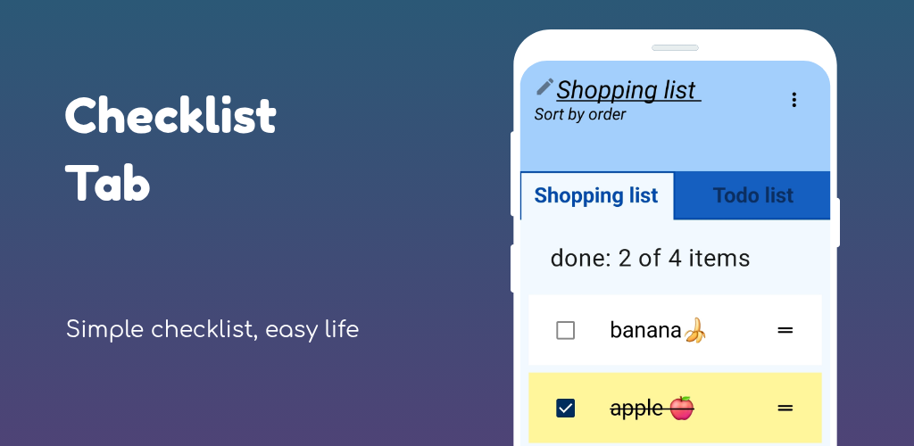
Checklist Tab app. Remind your everything to buy or to do with lists in 2 simple tabs. You can change tap name whenever you want.
Make everyday life is easy! Checklist tab is the task memo app that makes your everyday is simple and easy
to show what things to buy or to do.
Get the best task memo app.
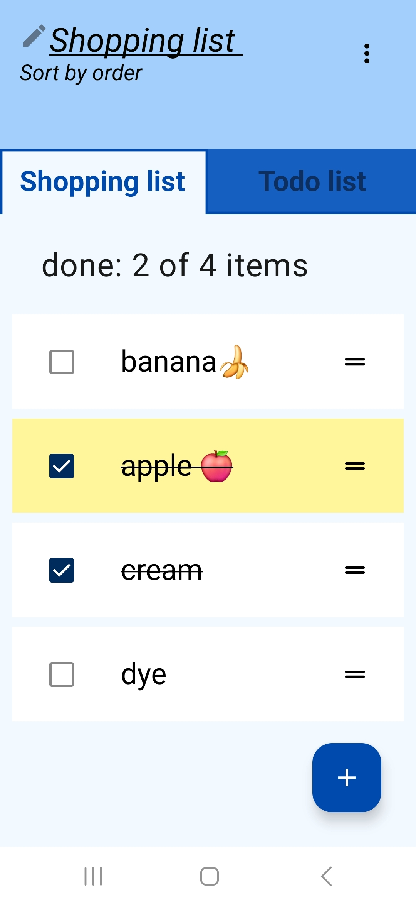
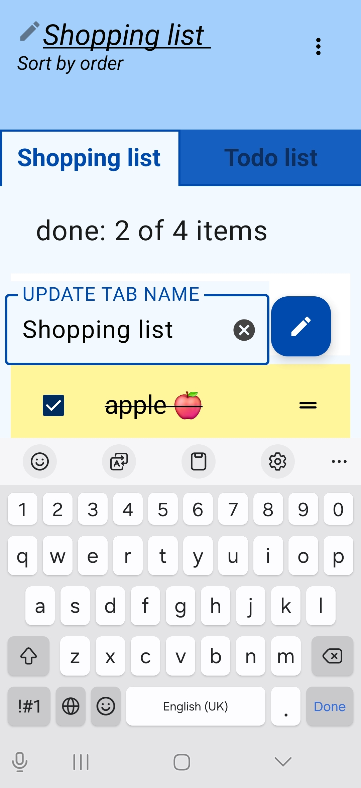
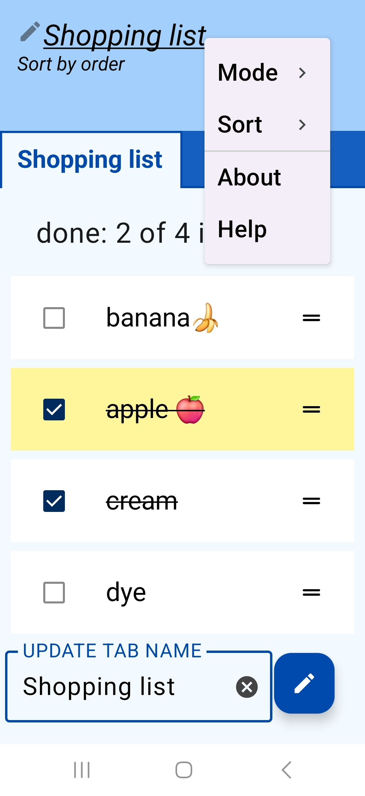
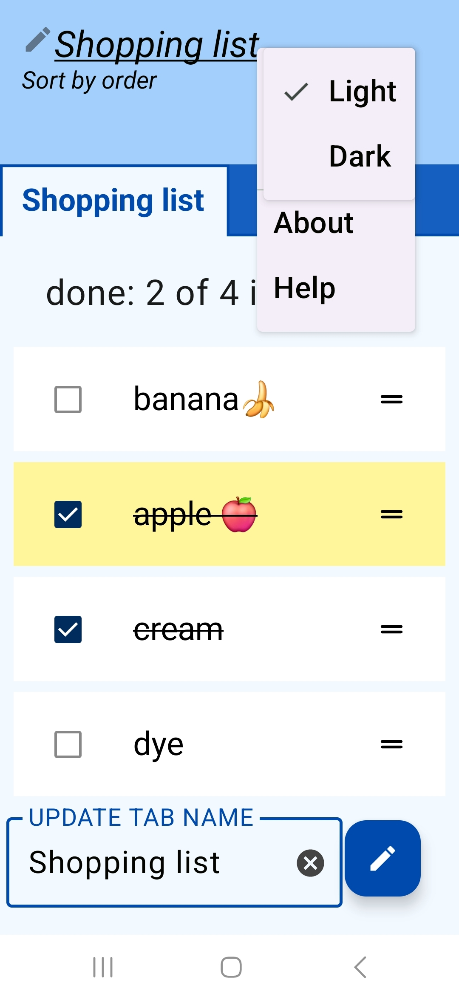
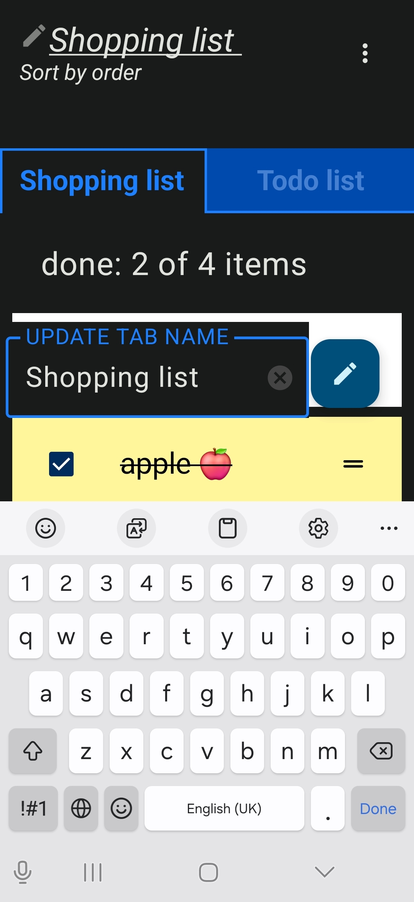
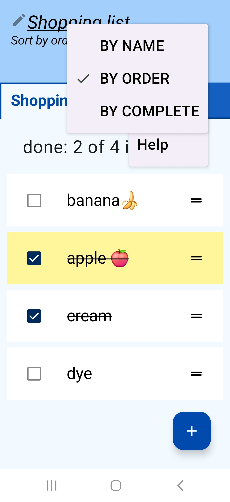
- No login required
Start using immediately without any login.
- Memorize things in simple 2 tabs with list. Intuitively rearrange with swipe gestures.
- Tab function Organize your list by categories in 2 simple tabs Shopping and Todo by default. You can change the tap name if you want.
- Auto saving function. Don't worry about closing the app.
- Sort function by name, order or complete.
- Reorder by drag item move up or down when it's sorted by order or complete
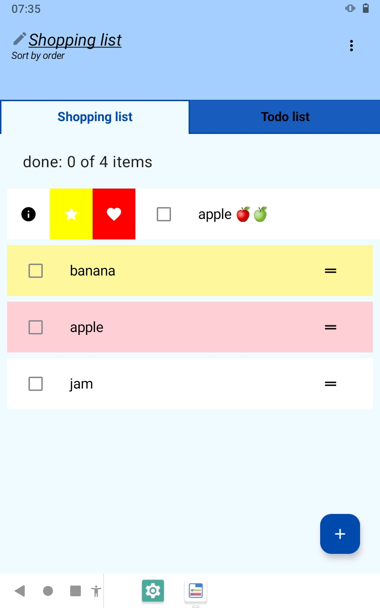
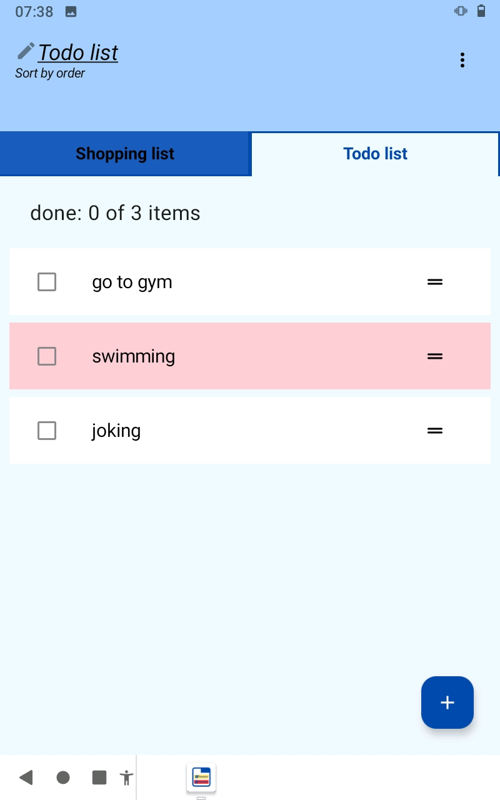
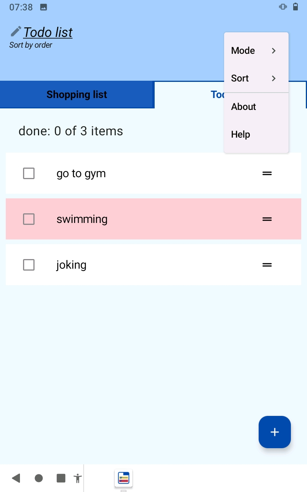
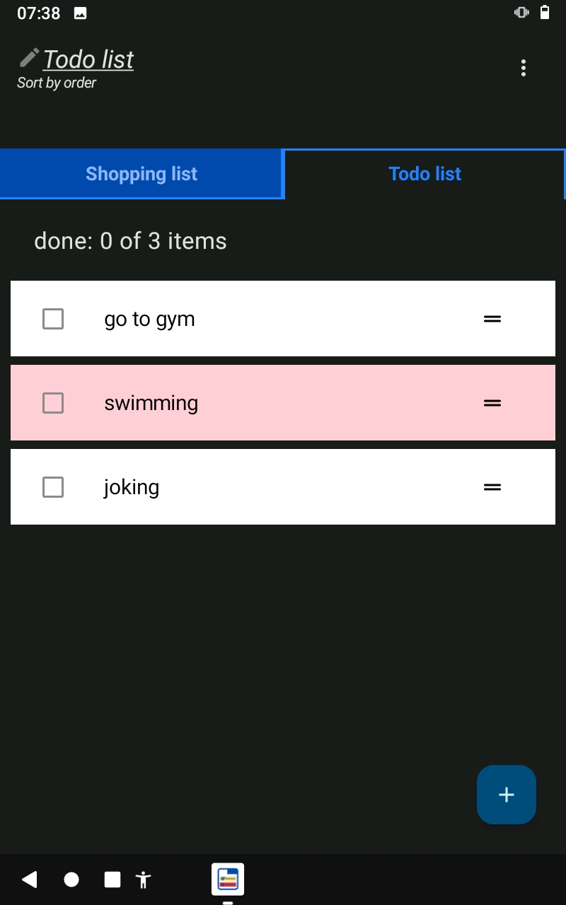
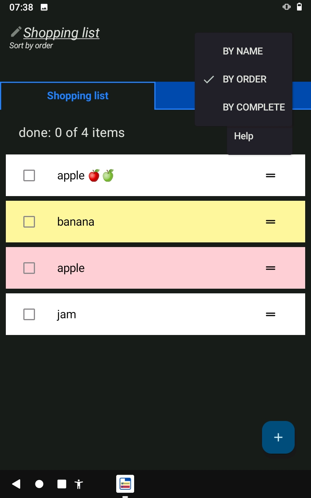
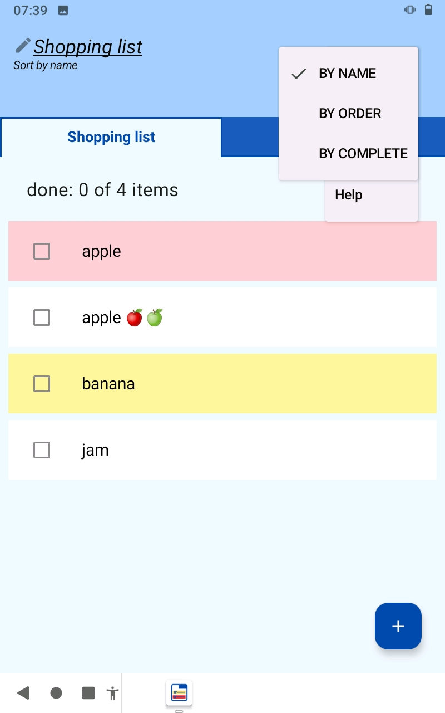
How to use
- Open the app
- Click on tab to select
- Change tab names by clicking on the top
- Input your list of things on each tab
- Swipe right to change background color
- Swipe left to delete
- Click on menu to sort the list by name, order or complete
- Click on checkbox when item has done.
Our aim
This app will become your best assistant to memorize everything that you want to buy or to do.
Make your daily life easy.
Contact: santikoo@gmail.com